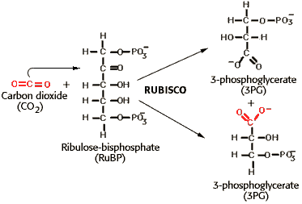

Photosynthesis Problem Set 2
Problem 1: Calvin experiment
As discovered by Calvin, when algal cells are exposed to radioactive carbon dioxide in the light for only 1 second, the compound that is most quickly and most extensively labeled with radioactive C has how many carbon atoms?
A. 2B. 3
Ribulose-1,5-bisphosphate carboxylase utilizes carbon dioxide and ribulose-1,5-bisphosphate as substrates, and produces two molecules of 3-phosphoglycerate as products. This is the entry point for carbon dioxide into the carbohydrate biosynthesis pathway. The reaction is shown in the diagram:
C. 4
D. 5
E. 6


University of Arizona
Sunday, September 29, 1996
Contact the Development Team
http://biology.arizona.edu
All contents copyright © 1996. All rights reserved.